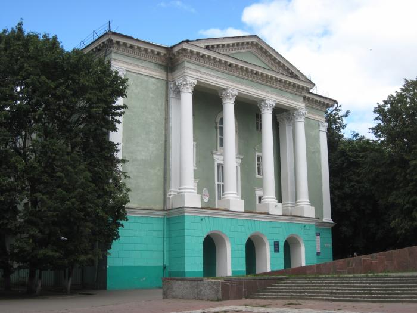

Обо мне
Меня зовут Васильев Николай, я из города-героя Смоленска. Мне 16 лет.
Я учусь в Смоленском колледже телекоммуникаций на 1 курсе по специальности "Программирование в компьютерных системах". Мне очень нравится здесь учиться. Здание колледжа красивое, старинное. В аудиториях максимально комфортная для обучения и приятная для меня атмосфера.
Наши преподаватели - лучшие преподаватели в мире! С ними можно общатсья в свободное время, они всегда помогут советом по учебе. На парах они проявляют себя как настоящие специалисты, готовые научить молодое поколение всему, что умеют сами!

Фотография нашего чудесного колледжа!